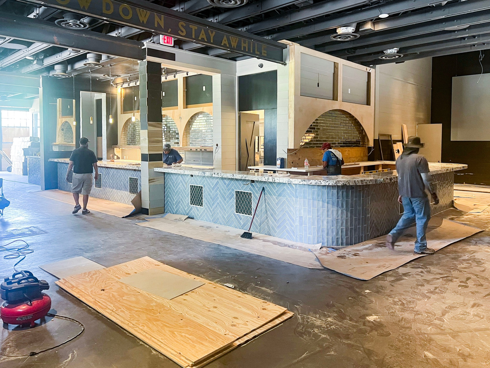
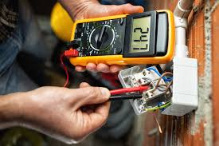
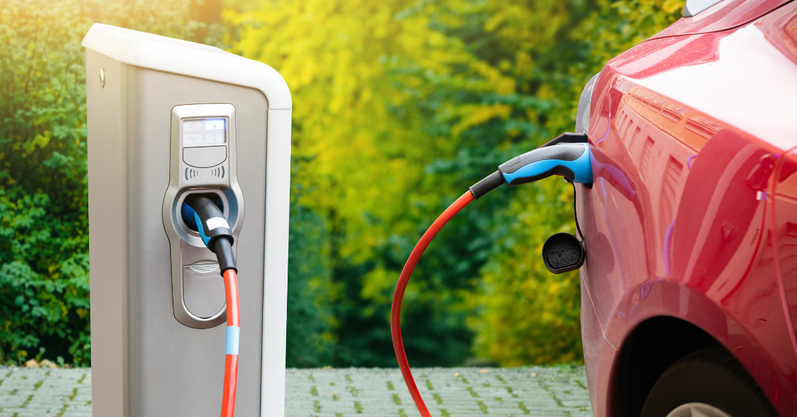

Northwest Austin Electrical Services for Modern Family Living
Family-focused electrical services for Northwest Austin thriving communities — new construction, smart homes, safety upgrades, and EV charging (TECL #28315)
Family-focused electrical services for Northwest Austin thriving communities — new construction, smart homes, safety upgrades, and EV charging (TECL #28315)
Texas Electric and Light has been proudly serving Northwest Austin's thriving family communities for years, understanding that this region represents the best of suburban Austin living. From established neighborhoods like Northwest Hills to rapidly growing communities in Cedar Park and Leander, we provide electrical services that support the family-focused lifestyle that makes Northwest Austin so desirable.
We know that Northwest Austin families have high expectations for their homes. Our electrical services match those standards, providing the safety, convenience, and modern features that busy families need. Whether you are building a new home in a master-planned community or upgrading your existing family home, we deliver electrical solutions that enhance your Northwest Austin lifestyle.

From new construction in Cedar Park to smart home upgrades in Anderson Mill to family safety features throughout Northwest Hills, we deliver comprehensive electrical services for all of Northwest Austin.
Northwest Austin continued growth means new homes and communities are constantly being developed. Our new construction electrical services support the development that makes Northwest Austin one of Texas premier family destinations.


Northwest Austin is built for families, and our family home electrical services ensure your systems support every aspect of modern family life.
Northwest Austin families are tech-savvy and expect their homes to enhance their busy lifestyles. Our smart home and EV charging services create modern living environments that adapt to your family needs.

We understand what families need to feel safe at home — from child-proofing to whole-house surge protection.
We serve all of Northwest Austin from Northwest Hills and Anderson Mill to Cedar Park, Leander, and the newest master-planned communities.
We regularly partner with Northwest Austin builders and developers, delivering quality electrical work on schedule.
Established 1980s-1990s neighborhoods with excellent schools.
Rapidly growing suburb with new construction and master-planned communities.
One of the fastest-growing areas in the Austin metro.
Diverse mix of established homes and new development.
Map of Northwest Austin where we provide electrical services
Texas Electric and Light proudly serves Northwest Austin and the surrounding area, including:
From our central Texas base, we typically reach Northwest Austin communities within 30-45 minutes for emergency calls.
| Service Type | Response Time |
|---|---|
| Emergency Service | 30-45 minutes |
| Same-Day Service | Same business day |
| Scheduled Appointments | 1-2 business days |
Whether you are building a new home, upgrading an established family home, or adding smart home features and EV charging — our licensed electricians serve all of Northwest Austin with professional, family-focused electrical service.
Licensed & Insured | TECL #28315 | Serving Austin Since 2004